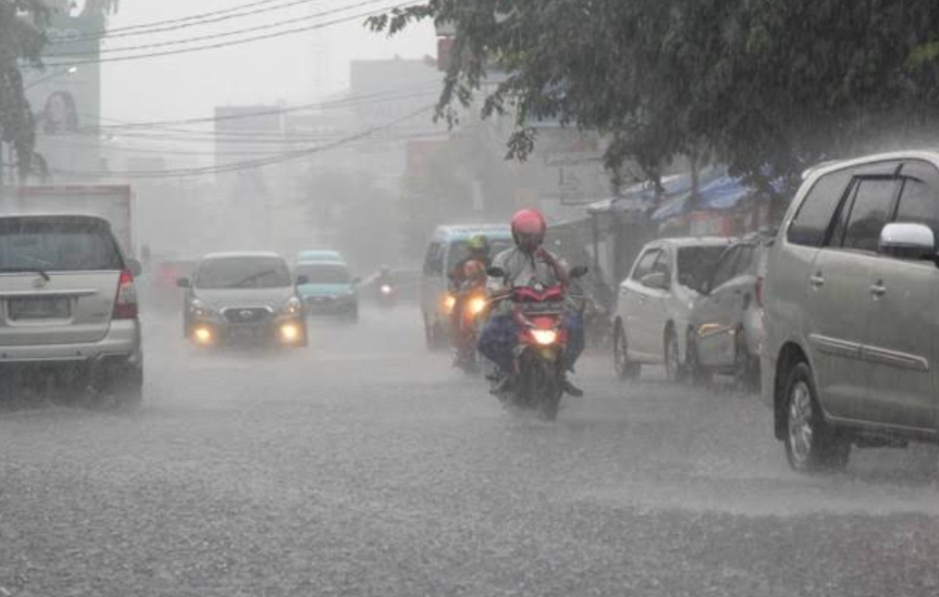
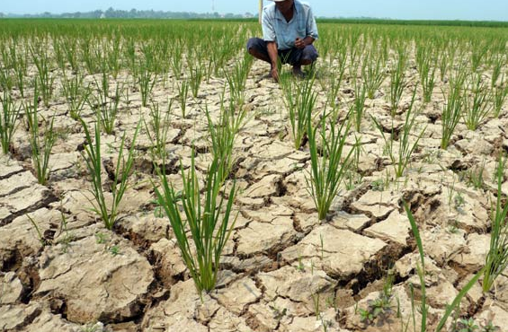
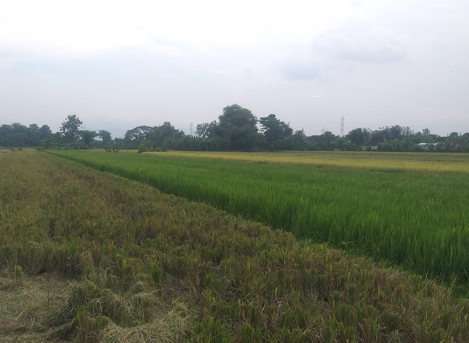
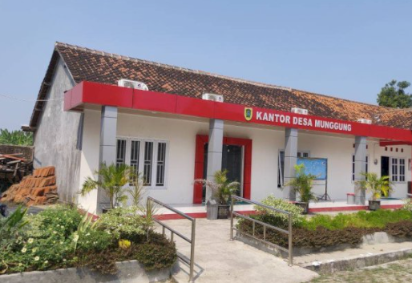
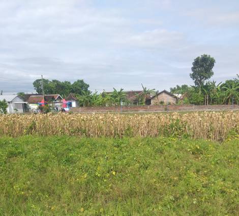
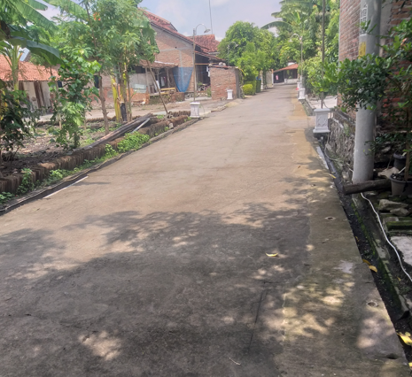

Sistem Informasi Pertanahan
Desa Munggung · Kecamatan Karangdowo
Memuat Waktu...
👤
Memuat...
⏏
Desa Munggung · Kecamatan Karangdowo
Mengenal lebih dalam kondisi fisik, topografi, iklim, dan tata guna lahan Desa Munggung, Kecamatan Karangdowo, Kabupaten Klaten.
Desa Munggung terletak di wilayah Kecamatan Karangdowo, Kabupaten Klaten, Provinsi Jawa Tengah — sebuah dataran rendah subur yang dialiri jaringan irigasi teknis.
7°42'31" LS · 110°43'39" BT
Sistem WGS 84±82 meter di atas permukaan laut
Dataran rendah, relief datar±142 Hektare
Terdiri dari 4 dusun, 4 RW, 12 RT±14 km dari Kota Klaten
Dapat ditempuh ±25 menitDesa Munggung berbatasan langsung dengan beberapa desa tetangga di Kecamatan Karangdowo dan sekitarnya.
Karakteristik fisik Desa Munggung menunjukkan wilayah dataran rendah yang ideal untuk pertanian intensif dengan dukungan irigasi teknis.
Desa Munggung beriklim tropis dengan dua musim utama yang mempengaruhi pola tanam dan kehidupan masyarakat sehari-hari.

Curah hujan rata-rata 2.200 mm/tahun. Periode ini menjadi musim tanam utama padi sawah. Suhu berkisar 24–27°C dengan kelembaban tinggi.

Curah hujan rendah namun irigasi teknis memungkinkan penanaman palawija dan sayuran. Suhu mencapai 30–33°C di siang hari.
Dominasi sawah irigasi teknis menjadi ciri khas Desa Munggung sebagai desa agraris produktif di Kabupaten Klaten.



